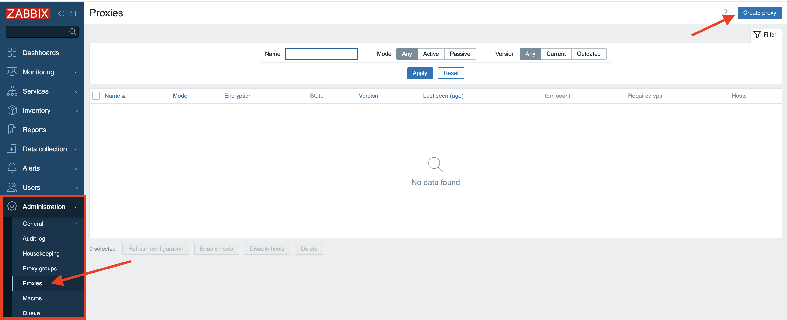
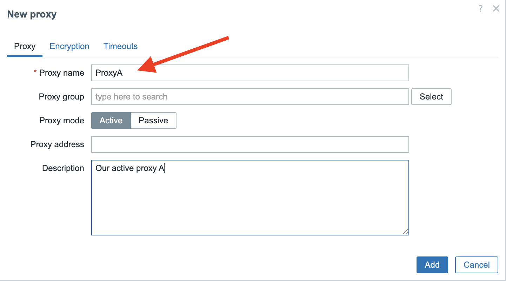
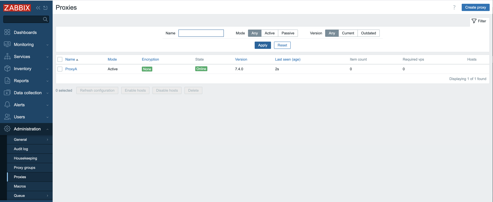
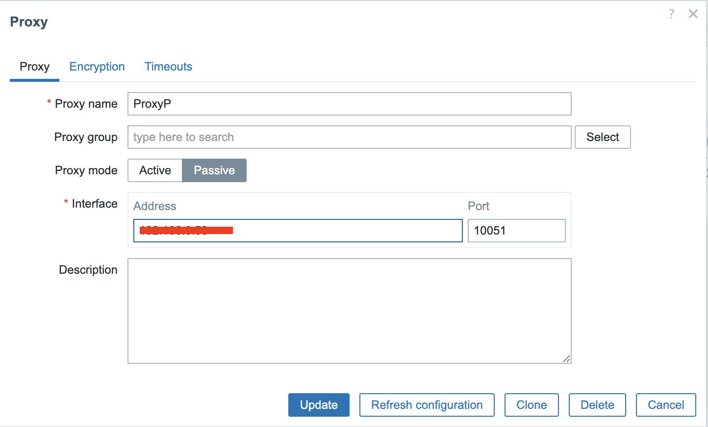
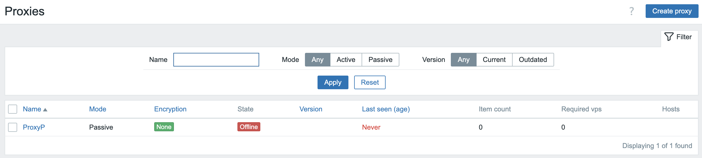
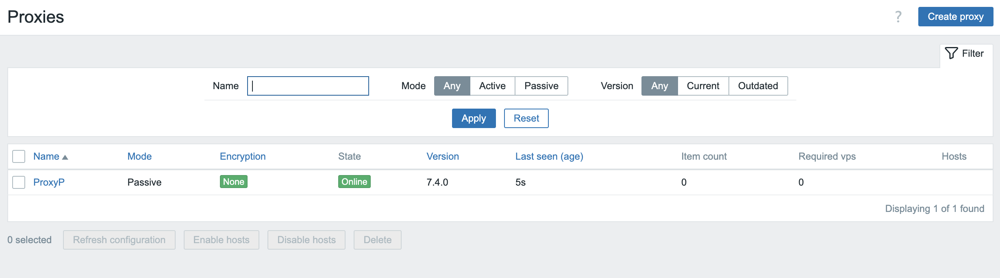

Active and Passive proxies
Active proxies
Let's first start with the setup of an active Proxy. Things should be very simple to setup. The only thing we need to have for now is a working Zabbix installation. The underlying OS is not important.
Zabbix GUI configuration
There are 2 things we need to to when we like to setup a Zabbix proxy and one of
those steps is adding the proxy in the frontend of Zabbix. So from the menu let's select
Administration => Proxies and click in the upper right corner on Create proxy.

3.3 Create proxy
Once pressed a new modal form will pop-up where we need to fill in some information.
For active proxies we only need to enter the Proxy name field. Here we will enter
ProxyA to remind us this will be an active proxy.
Don't worry about the other fields we will cover them later. In the Description
field you could enter some text to make it even more clear that this is an active proxy.
Note
For Zabbix active proxies, you only need to specify the hostname during configuration. This hostname acts as the unique identifier that the Zabbix server uses to distinguish between different active proxies and manage their data correctly.

3.4 New proxy
Our next step involves installing the proxy binaries on our OS. If you don't
remember how to this or aren't sure then let's have a look at Chapter 01 =>
Basic Installation.
Installing the proxy
Next up, we need to get the Zabbix proxy software onto your system. If you're not
sure how to do this or need a reminder, take a quick peek at Chapter 1, called
Basic Installation. It walks you through the whole process.
Now that your system knows where to find the Zabbix software, we can actually install it. It's pretty simple, but there's one thing we need to decide upfront. Zabbix proxies need a place to store their information, and they can use one of three options: MySQL, PostgreSQL, or SQLite3.
We will only cover SQlite as MySQL and PostgreSQL are basically already covered
in Chapter 1, the Basic installation.
Note
The only thing that is a bit different when you setup a proxy with MySQL or
PostgreSQL are the scripts you need to setup the DB structure. for MySQL they
are located under /usr/share/zabbix/sql-scripts/mysql/proxy.sql for PostgreSQL
they can be found at /usr/share/zabbix/sql-scripts/postgresql/proxy.sql.
Make sure you always check the correct Zabbix documentation for your version
as they have been moved to different locations over time even.
https://www.zabbix.com/documentation/current/en/manual/installation/install_from_packages/rhel#proxy-installation
Install zabbix-proxy-sqlite3
Red Hat
Ubuntu
Note
If you want to use MySQL or PostgreSQL then you can use the package zabbix-proxy-mysql
or zabbix-proxy-pgsql depending on your needs.
Now that we have installed the needed package we still have to do a few configuration
changes. Let's edit our file /etc/zabbix/zabbix_proxy.conf with your favourite editor.
There are only a few lines we need to alter. The first option we will have to check
is ProxyMode. Since we want to configure our proxy as active it needs to have
value 0 lucky for us this is the default value.
The other option that is important is the option Server this is standard 127.0.0.1
and we need to replace this with the IP or DNS name of our zabbix server.
Note
You can fill in multiple servers here in case you have more then 1 zabbix server
connecting to your proxy. Also the port can be added here in case your server
listens on another port then the standard port 10051. Just be careful to not
add the IP and DNS name for the same server as this can return double values.
Another important option is Hostname remember in our frontend we gave our proxy
the name ProxyA now we have to fill in the exact same name here for hostname.
Just like a zabbix agent in active mode Zabbix server will use the name as a
unique identifier.
The last parameter that we need to set is DBName this is the name for our database
and since we work with SQLite3 there is no need to create a database, Zabbix can
handle this for us. Let's use the following configuration DBName=/home/zabbix/zabbix_proxy.
Before we can start our proxy we need to create the correct folder.
sudo mkdir /home/zabbix and add the correct rights. sudo chown zabbix: /home/zabbix/
Note
A list of all configuration options can be found in the Zabbix documentation. https://www.zabbix.com/documentation/current/en/manual/appendix/config/zabbix_proxy
Info
One important new configuration parameter that was added in 7.0 is ProxyBufferMode.
In Proxies that where installed before 7.0 the data was first written to
disk in the database and then sent to the Zabbix server. For these installations
when we upgrade this remains the default behavior after upgrading to Zabbix
7.x or higher. It's now recommended for performance reasons to use the new
setting hybrid and to define the ProxyMemoryBufferSize.
The Zabbix proxy uses a temporary space to hold data before sending it to the main server. There are two ways this works.
-
In 'hybrid' mode: this temporary space has a safety feature. If the proxy stops, if the space gets full, or if the data has been there for too long, the proxy will save everything to the database to prevent any loss. After saving, it goes back to its normal temporary holding.
-
In 'memory' mode: it only uses this temporary space without the extra saving step. This is faster, but it means that if the proxy stops or the temporary space overflows, any data that hasn't been sent yet will be lost.
Once you have made all the changes you need in the config file besides the once
we have covered we only need to enable the service and start our proxy.
Of course don't forget to open the firewall port 10051 on your Zabbix server
side as this is an active proxy.
If all goes well we can check the log file from our proxy and we will see that Zabbix has created the database by itself.
sudo tail -f /var/log/zabbix/zabbix_proxy.log
11134:20250519:152232.419 Starting Zabbix Proxy (active) [Zabbix proxy]. Zabbix 7.4.0beta2 (revision 7cd11a01d42).
11134:20250519:152232.419 **** Enabled features ****
11134:20250519:152232.419 SNMP monitoring: YES
11134:20250519:152232.419 IPMI monitoring: YES
11134:20250519:152232.419 Web monitoring: YES
11134:20250519:152232.419 VMware monitoring: YES
11134:20250519:152232.419 ODBC: YES
11134:20250519:152232.419 SSH support: YES
11134:20250519:152232.419 IPv6 support: YES
11134:20250519:152232.419 TLS support: YES
11134:20250519:152232.419 **************************
11134:20250519:152232.419 using configuration file: /etc/zabbix/zabbix_proxy.conf
11134:20250519:152232.419 cannot open database file "/home/zabbix/zabbix_proxy": [2] No such file or directory
11134:20250519:152232.419 creating database ...
11134:20250519:152232.478 current database version (mandatory/optional): 07030032/07030032
11134:20250519:152232.478 required mandatory version: 07030032
Going back to our frontend once everything is properly configured and started on our proxy side we should be able to see in the frontend that our active proxy is online. Zabbix will also show the version of our proxy and the last seen age.
You are now ready. Your proxy will behave like the Zabbix server from now on all
hosts will need to connect to the proxy with their config instead of the Zabbix server.

3.5 Active proxy configured
Passive Proxy
Just like with the setup of our active proxy we need a working Zabbix server and a extra VM with Ubuntu or Rocky so we can install a proxy.
Zabbix GUI configuration
There are 2 things we need to to when we like to setup a Zabbix proxy and one of
those steps is adding the proxy in the frontend of Zabbix. So from the menu let's select
Administration => Proxies and click in the upper right corner on Create proxy.
3.6 Create proxy
Once pressed a new modal form will pop-up where we need to fill in some information.
For active proxies we only need to enter the Proxy name field. Here we will enter
ProxyP to remind us this will be a passive proxy.
For the passive proxy we also need to specify the Interface field. Here we add
the IP of the host where our proxy runs on. You also notice that we use the same port
10051 as the Zabbix server to communicate with our proxy.
Don't worry about the other fields we will cover them later. In the Description
field you could enter some text to make it even more clear that this is a passive proxy.

3.7 New passive proxy
Our next step involves installing the proxy binaries on our OS. If you don't
remember how to this or aren't sure then let's have a look at Chapter 01 =>
Basic Installation.
Installing the proxy
Next up, we need to get the Zabbix proxy software onto your system. If you're not
sure how to do this or need a reminder, take a quick peek at Chapter 1, called
Basic Installation. It walks you through the whole process.
Now that your system knows where to find the Zabbix software, we can actually install it. It's pretty simple, but there's one thing we need to decide upfront. Zabbix proxies need a place to store their information, and they can use one of three options: MySQL, PostgreSQL, or SQLite3.
We will only cover SQlite as MySQL and PostgreSQL are basically already covered
in Chapter 1, the Basic installation.
Note
The only thing that is a bit different when you setup a proxy with MySQL or
PostgreSQL are the scripts you need to setup the DB structure. for MySQL they
are located under /usr/share/zabbix/sql-scripts/mysql/proxy.sql for PostgreSQL
they can be found at /usr/share/zabbix/sql-scripts/postgresql/proxy.sql.
Make sure you always check the correct Zabbix documentation for your version
as they have been moved to different locations over time even.
https://www.zabbix.com/documentation/current/en/manual/installation/install_from_packages/rhel#proxy-installation
Install zabbix-proxy-sqlite3
Red Hat
Ubuntu
Note
If you want to use MySQL or PostgreSQL then you can use the package zabbix-proxy-mysql
or zabbix-proxy-pgsql depending on your needs.
Now that we have installed the needed package we still have to do a few configuration
changes. Let's edit our file /etc/zabbix/zabbix_proxy.conf with your favourite editor.
There are only a few lines we need to alter. The first option we will have to check
is ProxyMode. Since we want to configure our proxy as passive it needs to have
value 1. Note that the default value is 0 for Active.
The other option that is important is the option Server this is standard 127.0.0.1
and we need to replace this with the IP or DNS name of our zabbix server.
Note
You can fill in multiple servers here in case you have more then 1 zabbix server
connecting to your proxy. Also the port can be added here in case your server
listens on another port then the standard port 10051. Just be careful to not
add the IP and DNS name for the same server as this can return double values
Another important option is Hostname remember in our frontend we gave our proxy
the name ProxyP now we have to fill in the exact same name here for hostname.
The last parameter that we need to set is DBName this is the name for our database
and since we work with SQLite3 there is no need to create a database, Zabbix can
handle this for us. Let use the following configuration DBName=/home/zabbix/zabbix_proxyP.
Before we can start our proxy we need to create the correct folder.
sudo mkdir /home/zabbix and add the correct rights. sudo chown zabbix: /home/zabbix/
Info
One important new configuration parameter that was added in 7.0 is ProxyBufferMode.
In Proxies that where installed before 7.0 the data was first written to
disk in the database and then sent to the Zabbix server. For these installations
when we upgrade this remains the default behavior after upgrading to Zabbix 7.x
or higher.
It's now recommended for performance reasons to use the new setting hybrid
and to define the ProxyMemoryBufferSize.
The Zabbix proxy uses a temporary space to hold data before sending it to the main server. There are two ways this works.
-
In 'hybrid' mode: this temporary space has a safety feature. If the proxy stops, if the space gets full, or if the data has been there for too long, the proxy will save everything to the database to prevent any loss. After saving, it goes back to its normal temporary holding.
-
In 'memory' mode: it only uses this temporary space without the extra saving step. This is faster, but it means that if the proxy stops or the temporary space overflows, any data that hasn't been sent yet will be lost.
Once you have made all the changes you need in the config file besides the once we have covered we only need to enable the service and start our proxy.
If all goes well we can check the log file from our proxy and we will see that Zabbix has created the database by itself.
``` bash
sudo tail -f /var/log/zabbix/zabbix_proxy.log
```
``` bash
11134:20250519:152232.419 Starting Zabbix Proxy (passive) [ProyP]. Zabbix \
7.4.0beta2 (revision 7cd11a01d42).
11134:20250519:152232.419 **** Enabled features ****
11134:20250519:152232.419 SNMP monitoring: YES
11134:20250519:152232.419 IPMI monitoring: YES
11134:20250519:152232.419 Web monitoring: YES
11134:20250519:152232.419 VMware monitoring: YES
11134:20250519:152232.419 ODBC: YES
11134:20250519:152232.419 SSH support: YES
11134:20250519:152232.419 IPv6 support: YES
11134:20250519:152232.419 TLS support: YES
11134:20250519:152232.419 **************************
11134:20250519:152232.419 using configuration file: /etc/zabbix/zabbix_proxy.conf
11134:20250519:152232.419 cannot open database file "/home/zabbix/zabbix_proxy": [2] No such file or directory
11134:20250519:152232.419 creating database ...
11134:20250519:152232.478 current database version (mandatory/optional): 07030032/07030032
11134:20250519:152232.478 required mandatory version: 07030032
```
However if we go to our frontend nothing seems to be working at all even we have configured everything correct on our proxy.

3.8 Proxy not working
The explanation is rather easy as we run a passive proxy, the Zabbix server needs
to poll our proxy. But we didn't configured our Server yet. So next step is to add
the needed proxy pollers in our server config file.
Use your preferred editor to open the zabbix server configuration file.
/etc/zabbix/zabbix_server.conf
Look for the option StartproxyPollers and remove the # sign in front and
give it value 2. Save the file and exit.
Now we have to restart the zabbix server with systemctl restart zabbix-server
If you look back in the frontend we see that it's still not working and this makes sense as we still need to open the firewall on our proxy.
Open firewall port 10051/tcp
Red Hat
Ubuntu
If we now look at our proxy interface in the frontend we will see that our passive proxy
becomes available. If it's not green give it a few seconds or check all steps again
and verify your log files.

3.8 Proxy working
Conclusion
This chapter has demonstrated the indispensable role of Zabbix proxies in building
robust, scalable, and distributed monitoring infrastructures. We've explored the
fundamental distinction between active and passive proxy modes, highlighting
how each serves different deployment scenarios and network topologies. Understanding
their individual strengths, from simplified firewall configurations with
active proxies to the server-initiated control of passive proxies, is crucial
for optimal system design.
We delved into the comprehensive settings that govern proxy behavior, emphasizing how proper configuration of parameters like agent polling intervals and data senders, directly impacts performance and data accuracy. The evolution of data storage mechanisms within the proxy, from purely memory-based approaches to the flexible options of disk and hybrid storage, empowers administrators to finely tune resource utilization and data persistence based on their specific needs and the volume of monitored data.
Finally, we examined the critical advancements in configuration synchronization, particularly the significant improvements introduced with Zabbix 7.0. The shift towards more efficient and streamlined config sync processes, moving beyond the limitations of earlier versions, underscores Zabbix's continuous commitment to enhancing operational efficiency and simplifying large-scale deployments.
In essence, Zabbix proxies are far more than simple data forwarders; they are intelligent intermediaries that offload significant processing from the central Zabbix server, reduce network traffic, and enhance the resilience of your monitoring solution. By carefully selecting the appropriate proxy type, meticulously configuring its settings, and leveraging the latest features in data storage and configuration management, you can unlock the full potential of Zabbix to monitor even the most complex and geographically dispersed environments with unparalleled efficiency and reliability. The knowledge gained in this chapter will be instrumental in designing and maintaining a Zabbix infrastructure that is not only robust today but also adaptable to future monitoring challenges.